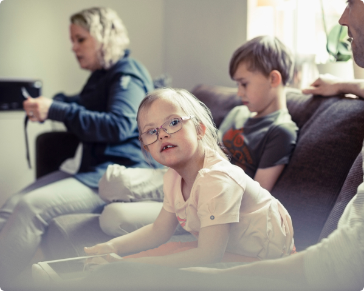
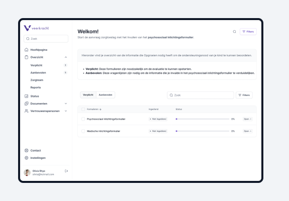

Opgroeien bezorgt jou via het platform Veerkracht enkele vragenlijsten. Dien deze in binnen de 4 maanden in.
In samenwerking met de Vlaamse Overheid
Maak kennis met de zorgtoeslag
Je kan een zorgtoeslag aanvragen als je kind langdurig ziek is of specifieke ondersteuningsbehoeftes heeft. Ontdek hier de voorwaarden voor een zorgtoeslag in je Groeipakket. Voldoe je aan de voorwaarden? Dan kan je ook het bedrag van de zorgtoeslag berekenen.
Start je aanvraag
Recht op een zorgtoeslag
Wanneer heb je recht op de zorgtoeslag ?
Sommige gezinnen hebben extra ondersteuning nodig. Wanneer een kindje langdurig ziek is bijvoorbeeld. Of wanneer het door zijn of haar persoonlijkheid meer begeleiding vraagt. Het Groeipakket voorziet dan in extra steun om de zorg financieel draaglijker te maken: een zorgtoeslag.
Of jouw gezin in aanmerking komt, wordt getoetst aan de hand van 3 pijlers:
1
De lichamelijke en geestelijke gevolgen van de beperking, aandoening of ziekte van je kind
2
De invloed op het dagelijkse leven van je kind, bijvoorbeeld op het vlak van mobiliteit en leervermogen
3
De invloed op je gezin, zoals medische behandeling en noodzakelijke verplaatsingen
De evaluerende arts van Agentschap Opgroeien kent aan elke pijler punten toe.
Je kind heeft recht op een zorgtoeslag vanaf 4 punten in pijler 1 of vanaf 6 punten in de 3 pijlers samen.

Zorgtoeslag berekenen
Hoeveel zorgtoeslag krijg je?
Wil je het bedrag van je zorgtoeslag berekenen? Dat is afhankelijk van een puntensysteem. Dit puntensysteem bestaat uit 3 pijlers. De som van het aantal punten van de 3 pijlers bepaalt het bedrag van de zorgtoeslag.
Hieronder zie je een overzicht van welk bedrag je recht hebt bij elk aantal punten. Zo kan je jouw zorgtoeslag alvast berekenen. Let op: het beoordelen van het aantal punten gebeurt door Agentschap Opgroeien. Aan de hand van die punten berekent MyFamily het bedrag aan zorgtoeslag.
| Aantal punten 3 pijlers samen | Aantal punten 1ste pijler | Bedragen |
|---|---|---|
| 0 — 5 | 4 of meer | 89,16 euro |
| 6 — 8 | 0 — 3 | 118,74 euro |
| 6 — 8 | 4 of meer | 457,39 euro |
| 9 — 11 | 0 — 3 | 277,09 euro |
| 9 — 11 | 4 of meer | 457,39 euro |
| 12 — 14 | niet van toepassing | 457,39 euro |
| 15 — 17 | niet van toepassing | 520,09 euro |
| 18 — 20 | niet van toepassing | 557,24 euro |
| 21 of meer | niet van toepassing | 594,38 euro |
Zorgtoeslag aanvragen
Hoe kan je een zorgtoeslag aanvragen?
Veerkracht helpt je om zo gemakkelijk mogelijk je aanvraag te starten?
1
Selecteer je uitbetaler
2
Het onderzoek loopt
Opgroeien bezorgt jou via het platform Veerkracht enkele vragenlijsten. Dien deze in binnen de 4 maanden in.
3
Opgroeien beslist
Opgroeien bekijkt grondig alle documenten en indien mogelijk wordt je uitgenodigd voor een videogesprek.
4
Je uitbetaler betaald
Op basis van de beslissing van Opgroeien betaalt je uitbetaler de zorgtoeslag uit.
Zorgtoeslag aanvragen
Hoeveel zorgtoeslag krijg je?
Contacteer Veerkracht op de wijze die je verkiest: per telefoon,e-mail of brief.
Onze Groeipakketcoaches contacteren Agentschap Opgroeien om het onderzoek op te starten. Afhankelijk van de leeftijd van je kind, houden ze rekening met de situatie tot 5 jaar in het verleden. Je kan dus met terugwerkende kracht recht hebben op een zorgtoeslag.

Je ontvangt vervolgens een melding van Veerkracht om je aan te melden via het portaal.
Op het portaal ‘Veerkracht’ vul je tijdig het formulier voor psychosociale gegevens in via de knop ‘Specifieke ondersteuningsnood’.
Je kan je altijd laten bijstaan door een zorgverlener of iemand van de sociale dienst om dit formulier zo volledig mogelijk in te vullen.
Via het portaal kan je je behandelende arts contacteren. Samen met je arts kan je het medisch inlichtingenformulier invullen. Je arts kan dit formulier eHealth onder 'Evaluatie ondersteuningsnood Opgroeien (zorgtoeslag) - Medisch inlichtingenformulier'.
Respecteer de deadline en bezorg Agentschap Opgroeien binnen de 4 maanden beide documenten. Heb je toch meer tijd nodig? Contacteer Agentschap Opgroeien via het nummer 02 533 13 41. Belangrijk: Je kan maximum 4 maanden uitstel vragen.
Je kan extra specifieke vragenlijsten door andere therapeuten (logopedist, kinesitherapeut, …) laten invullen en deze opvolgen in jouw dossier op ‘Veerkracht’. Je stuurt de specifieke vragenlijsten door en vraagt of ze deze willen invullen. Hoe meer informatie je kan bezorgen, hoe beter de evaluatie kan gebeuren.
Op basis van de informatie in de formulieren zal een arts van het Team Zorgtoeslagen bij Agentschap Opgroeien je aanvraag verwerken. Afhankelijk van de aandoening, zal je kind al dan niet uitgenodigd worden voor een videogesprek. Dit geeft de arts de mogelijkheid om enkele zaken te verduidelijken. Je kind wordt niet medisch onderzocht.
Team Zorgtoeslagen van Agentschap Opgroeien bezorgt het resultaat van de evaluatie aan jou en aan je uitbetaler. Zodra je uitbetaler het resultaat ontvangt, berekenen we wat dit betekent voor jou en laten we je dit weten. Afhankelijk van de beslissing is het mogelijk dat we een zorgtoeslag voor het verleden betalen met terugwerkende kracht.
Zorgtoeslag aanvragen
Verandert de medische toestand van je kind?
Heeft je kind meer/minder professionele hulp nodig of verandert er iets anders aan de medische toestand nadat er al een eerdere beslissing door het Team Zorgtoeslagen werd genomen? Contacteer dan meteen je uitbetaler via Veerkracht om een herziening aan te vragen.
Is de termijn van de vorige beslissing verstreken? Dan zal Team Zorgtoeslagen zelf een herziening opstarten.
Maak je geen zorgen wanneer de erkenning voor je kind is afgelopen.
Agentschap Opgroeien, start dan automatisch het onderzoek voor een nieuwe erkenning. Je zal via hen formulieren ontvangen die je moet invullen. Bezorg hen tijdig de nodige documenten. Ontvangen zij die te laat? Dan is de beslissing voor een zorgtoeslag altijd negatief en moet je een nieuwe aanvraag doen.
Verandert de medische toestand van je kind?
Het onderzoek naar een zorgtoeslag gebeurt via Team Zoë (zorgtoeslagevaluatie) van het Agentschap Opgroeien.
Wij hebben geen zicht op de specifieke duur van het onderzoek naar een zorgtoeslag voor jouw kindje. Wil je de exacte stand van zaken weten? Dan kan je contact opnemen met Team Zoë.
Zorgtoeslag aanvragen
Maak je geen zorgen wanneer de erkenning voor je kind is afgelopen.
Dat kan inderdaad, behalve wanneer je kind werkt…
- met een studentenovereenkomst voor meer dan 600 uur per jaar (vanaf 1/1/2023, 475 uur per jaar tot 31/12/2022).
- met een gewone arbeidsovereenkomst voor meer dan 80 uur per maand
- als zelfstandige met bijdrageplicht
- in een maatwerkbedrijf, ook beschutte werkplaats genoemd
- in het kader van een opleiding alternerend leren
- een bezoldigde stage
Maak je geen zorgen wanneer de erkenning voor je kind is afgelopen.
Wanneer je zoon of dochter 21 jaar is, dan stopt de zorgtoeslag en ontvang je het basisbedrag zonder zorgtoeslag. Dan zijn de algemene voorwaarden van het Groeipakket van toepassing.
Je kan dan wel een tegemoetkoming vragen voor personen met een handicap. Die aanvraag kan je opstarten wanneer je kind 20 wordt.
Wat als je kind binnenkort een inkomensvervangende tegemoetkoming (IVT) of een integratietegemoetkoming (IT) krijgt?
De minimumleeftijd om een IVT en/of IT te krijgen werd verlaagd naar 18 jaar. Krijgt je kind dit nog niet, maar wil je wel zo’n tegemoetkoming aanvragen? Dat kan bij de overheidsdienst voor personen met een handicap. Lees meer over een IVT of IT.
Vanaf 1 juni 2021 krijg je geen zorgtoeslag meer als je kind tegelijkertijd een IVT en/of IT ontvangt. Je krijgt wel het basisbedrag in je groeipakket (kinderbijslag). En dit tot wanneer je kind 21 jaar is en erkend werd door Opgroeien, of tot 25 jaar als je kind studeert.
Meer weten over de zorgtoeslag
Onze medewekers geven jou graag alle informatie
Vragen?
Meer weten over de zorgtoeslag
Neem dan zeker hiernaast een kijkje. Vind je het antwoord niet, bezoek dan onze veelgestelde vragenpagina.
Hoe vraag je een zorgtoeslag aan voor een kind met autisme ?

Hoe vraag je een zorgtoeslag aan voor een kind met autisme ?
Hoelang duurt een zorgtoeslag aanvraag?
Wie kan een zorgtoeslag aanvragen?
Wie is Team Zorgtoeslagevaluatie (Team Zoë)?